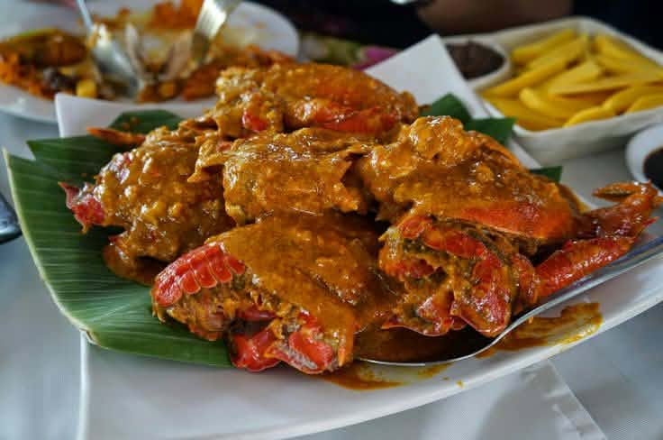
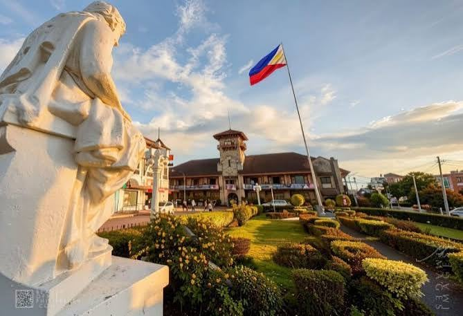
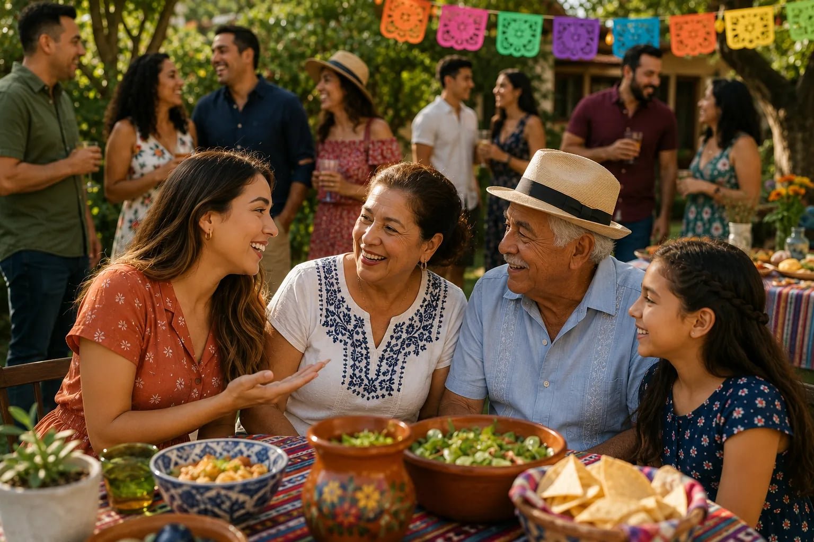

01 / FESTIVALS & CELEBRATIONS
01 / FESTIVALS & CELEBRATIONS
Festivals of Zamboanga
Fiesta Pilar honors Our Lady of the Pillar on October 12. Regatta de Zamboanga, street dancing, cultural presentations, and religious activities bring communities together.
A city of history
Explore the traditions, flavors, languages, and landmarks that make our city unique. A little guide to understanding and appreciating the cultural heritage of Zamboanga City.
BIENVENIDOS A ZAMBOANGA
The city of Zamboanga is known for its rich cultural heritage, shaped by its diverse communities, traditions, and history. This heritage is reflected in the city's festivals, traditional food, languages, customs, historical landmarks, and other cultural practices that have been passed down through generations. Cultural and historical attractions across the Zamboanga Peninsula also demonstrate the region's diverse heritage and places of interest. These cultural elements contribute to the identity of Zamboanga City and provide residents and visitors with opportunities to learn about and appreciate its heritage.
Explore Our CultureExplore the guide
The city of Zamboanga is known for its rich cultural heritage, shaped by its diverse communities, traditions, and history. This heritage is reflected in the city's festivals, traditional food, languages, customs, historical landmarks, and other cultural practices that have been passed down through generations. Cultural and historical attractions across the Zamboanga Peninsula also demonstrate the region's diverse heritage and places of interest. These cultural elements contribute to the identity of Zamboanga City and provide residents and visitors with opportunities to learn about and appreciate its heritage.
01 / FESTIVALS & CELEBRATIONS
Fiesta Pilar honors Our Lady of the Pillar on October 12. Regatta de Zamboanga, street dancing, cultural presentations, and religious activities bring communities together.

02 / TRADITIONAL FOODFrom coconut-rich Curacha and smoky Tausug Tiyula Itum to Satti, Knickerbocker, Lokot-Lokot, Tamal, and Baulu, local foods carry family and community traditions.

03 / CHAVACANOA distinct Spanish-based creole shaped by contact among Spanish and Philippine languages, Chavacano supports everyday communication and Zamboangueño identity.
 04 / HISTORY
04 / HISTORY
Fort Pilar, established in 1635, reflects the city's colonial and religious history. Taluksangay Mosque, City Hall, Plaza Pershing, Pasonanca Park, and Pettit Barracks show other parts of its heritage.
 05 / TRADITIONS
05 / TRADITIONS
Yakan tennun textiles, Yakan and Tausug garments, Subanen baskets, and vinta-inspired artwork express community knowledge and creativity.

06 / CUSTOMS & COMMUNITYChavacano, Tausug, Sama, Yakan, Subanen, Visayan, and other communities shape Zamboanga's diverse identity and shared community life.
No culture topics match your search. Try another word or category.
A closer look at heritage
Fort Pilar is one of Zamboanga City's best-known historical and cultural landmarks. Its long history connects the city to stories of the past, religious devotion, and heritage preservation.
Understand the past. Learn the background behind important places and cultural traditions.
Appreciate different communities. Culture is diverse, living, and shared in many ways.
Help keep traditions alive. Learning and respectful curiosity support cultural appreciation.
To understand a place, learn not only where its people live, but also the stories, language, and traditions they carry.
THE IDEA BEHIND THE ZAMBOANGA CULTURAL GUIDE